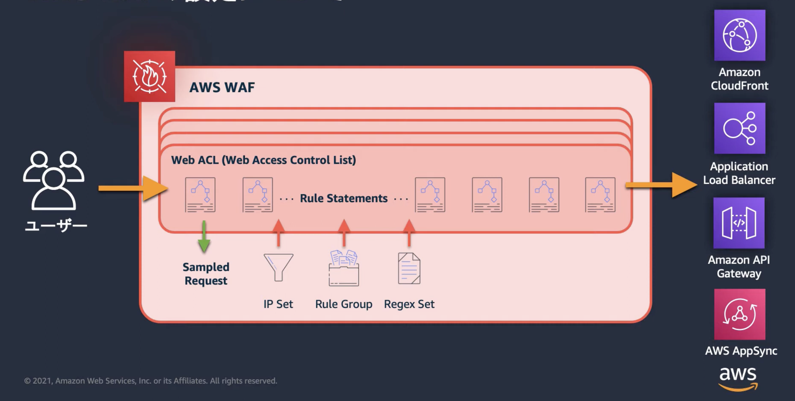

4.5. WAF¶
4.5.1. note¶
AWSが提供しているWeb Application Firewall。
AWSのサービスに通信が届く前にAWS WAFがルールに従ってフィルタリングをする機能を提供する。
CloudFront・APIGW・ALB・AppSync・Cognitoユーザープールなどに対するリクエストに対応することができる。
WebACLと呼ばれるルールセットを作成し、サービスに対してアタッチすることでAppに影響なく開始することができる。

4.5.2. ACL(Access Control List)¶
WAFで定義するアクセス制御に関するルールは、ACL（Access Control List）と呼ばれるルールセットにまとめ、保護するAWSリソースに関連付ける。
WebACLに複数のルールを設定する場合、設定されたルールの優先順位に従って評価されどのルールにも該当しない場合は、デフォルトのアクションが適用される。
キャパシティユニット¶
ACLにどれだけのルールを設定することができるかはキャパシティユニットによって決まる。
ルールごとに消費するキャパシティユニットの値が決まっており、ACLで設定したルールの合計値がACLのキャパシティユニットを超えるとルール追加ができなくなってしまう。
wafの基本料金には1500のキャパシティユニットが含まれており、課金することで最大で5000キャパシティユニットまで拡張できる。
4.5.3. ルール¶
ACLで利用されるルールでは、不正アクセスを防ぐための定義を記載する。
ルールには、AWSが提供しアップデートするマネージドルールとユーザーが自身で定義するカスタマイズルールがある。
ルール名 |
設定内容 |
|---|---|
マネージドルール |
マネージドルールはよくある攻撃パターンに対する対策として、AWSが提供しているプリセットルール。 |
AWS WAFカスタムルール |
カスタムルールでは、ユーザーが特定の保護要件に合わせて独自のルールを作成できます。 |
マネージドルールとルールグループ¶
マネージドルールはよくある攻撃パターンに対する対策として、AWSが提供しているプリセットルール。
マネージドルールはカテゴリに基づいていくつかのグループに分類されている
ルールグループ名 |
設定内容 |
|---|---|
ベースラインルールグループ |
ベースラインルールグループは、一般的なWebアプリケーションの脅威に対応するための基本的なセキュリティルールを提供します。 |
IP評価ルールグループ |
IP評価ルールグループは、botや不正アクセスと識別されたIPアドレスからのトラフィックを識別し、適切に対応するためのルールを含みます。 |
AWS WAFボットコントロールルールグループ |
AWS WAFボットコントロールルールグループは、自動化されたトラフィックと思われるリクエスト（ボットからのもの）を特定し、これをブロックまたは許可するためのルールを提供します。 |
カスタムルール¶
カスタムルールでは、以下の2つを組み合わせて記述することで柔軟なルールを作成することが可能
カテゴリ |
定義内容 |
|---|---|
Statement |
検査対象となる条件を設定し、複数のルールを「AND」または「OR」で結合する |
Rate-based rule |
通信の頻度に基づいてルールを定義することができる |
Action |
Statementの条件に基づいて、アクセスの許可または拒否を設定する |